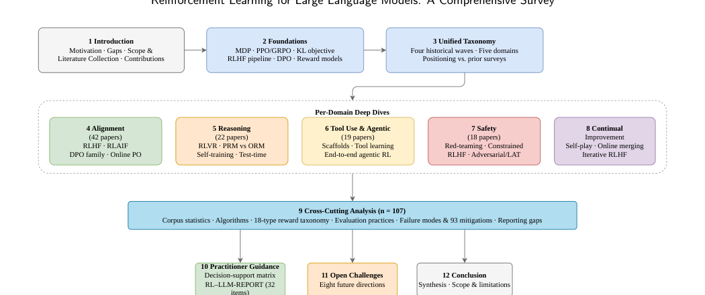
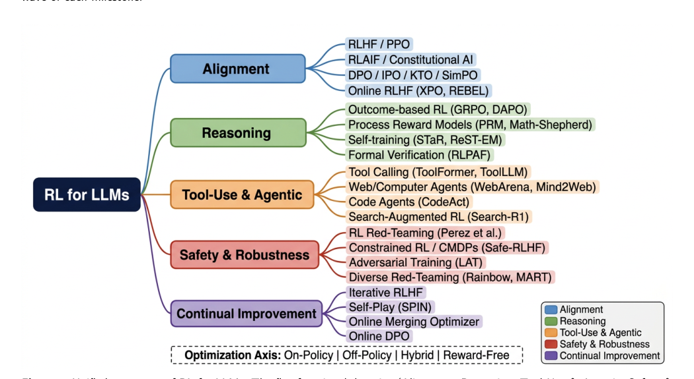
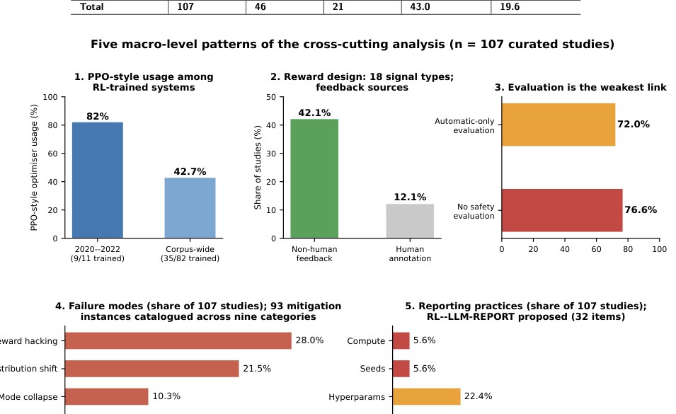
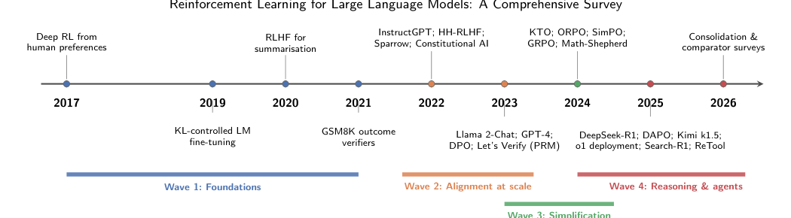

Cross-domain taxonomy
Five functional domains spanning alignment, reasoning, tool use and agents, safety and robustness, and continual improvement.
A Comprehensive Survey from Alignment to Agentic Decision-Making
Universiti Teknologi PETRONAS · CeRDaS · The University of Texas MD Anderson Cancer Center · SDAIA-KFUPM Joint Research Center for Artificial Intelligence
RL has expanded from preference alignment into reasoning with verifiable rewards, tool-using and agentic systems, safety-focused training, and continual post-training. This survey connects those threads with a shared functional taxonomy and a corpus-wide quantitative audit.
Five functional domains spanning alignment, reasoning, tool use and agents, safety and robustness, and continual improvement.
An 18-type reward-signal taxonomy extending beyond the usual reward-model versus “reward-free” distinction.
Algorithms, feedback sources, evaluation practices, failure modes, mitigations, and reproducibility are analyzed across the curated corpus.
RL–LLM-REPORT proposes 32 reporting items with empirical prevalence baselines and applicability-aware scoring.

The taxonomy organizes RL for LLMs by functional purpose while also tracking optimization architecture: on-policy, off-policy, hybrid, and explicit-reward-model-free preference optimization.

RLHF, RLAIF, Constitutional AI, DPO-family methods, and online preference optimization.
RL with verifiable rewards, GRPO/DAPO, process reward models, self-training, and formal verification.
Tool learning, browser/computer agents, code agents, search-augmented RL, and end-to-end agentic training.
RL red-teaming, constrained RL, adversarial training, latent adversarial training, and diverse red-team objectives.
Self-play, iterative RLHF, online model merging, continual preference learning, and forgetting control.
Across the 107-study purposive corpus, algorithm choice is diversifying while evaluation and reporting lag behind the pace of method development.

PPO-style optimization appears in 9/11 RL-trained systems in 2020–2022 versus 35/82 corpus-wide, indicating diversification rather than a single replacement.
Reward design now spans 18 types; non-human feedback sources are substantially more common than human annotation in the curated sample.
More than three quarters of studies omit safety evaluation entirely, exposing a cross-domain blind spot.
Reward hacking is the most frequently reported failure mode, followed by distribution shift at 21.5%.
Only 5.6% of papers report compute budgets and 5.6% report random seeds; complete hyperparameter reporting is also uncommon.
The survey traces foundations, alignment at scale, simplification through direct preference objectives, and the recent reasoning-and-agents wave.

The decision-support matrix is intended as a set of evidence-informed starting points, not prescriptions.
| Domain | Algorithm | Reward | Evaluation | Known pitfalls |
|---|---|---|---|---|
| Alignment | DPO / SimPO; PPO | Implicit preference or learned BT | AlpacaEval 2, MT-Bench, Arena-Hard + TruthfulQA | Length exploitation, reward hacking, alignment tax |
| Reasoning | GRPO / DAPO; PPO + PRM | Verifiable rule-based; PRM | MATH, GSM8K, AIME, ProcessBench | Format hacking, outcome-only masking of reasoning |
| Tool Use | PPO/GRPO with environment reward | Environment feedback; execution success | WebArena, ToolBench | API misuse, hallucinated tool calls, weak safety evaluation |
| Safety | PPO with classifier / constraints | Classifier-based; adversarial | HarmBench, JailbreakBench | Mode collapse, over-refusal |
| Continual | Online DPO; iterative RLHF | Progressive reference; self-play | Held-out evaluation; capability retention | Forgetting, reward staleness |
Track proxy-versus-gold reward divergence and use robust reward-modeling strategies to detect overoptimization early.
Include adversarial robustness, refusal/over-refusal checks, a threat model, and explicit pass/fail criteria for every RL-trained system.
Use at least three seeds with dispersion statistics when feasible, so improvements can be distinguished from run-to-run variance.
Items are grouped into five categories and labeled Mandatory, Recommended, or Optional. Applicability-aware scoring avoids penalizing methods for items that do not apply.
Important: the checklist items and prevalence baselines are evidence-derived, but the Mandatory/Recommended/Optional labels, weighting scheme, partial-credit convention, and 70% threshold are author-proposed starting points and have not yet undergone formal external validation.
| # | Item | Priority | Prevalence |
|---|---|---|---|
| 1 | Reward type (learned/implicit/rule-based/etc.) | M | 97.6% |
| 2 | Reward model architecture and scale | M | 33.8% |
| 3 | Reward training data source and size | M | 32.3% |
| 4 | Reward objective / loss function | M | 100.0% |
| 5 | Feedback source (human/AI/rule-based) | M | 86.6% |
| 6 | Reward failure modes observed | R | 67.1% |
| # | Item | Priority | Prevalence |
|---|---|---|---|
| 7 | Training data composition and size | M | 12.2% |
| 8 | Preference data collection protocol | M | 50.0% |
| 9 | Evaluation data specification | M | 100.0% |
| 10 | Data contamination / overlap analysis | R | 9.8% |
| 11 | Public data release or access instructions | R | 12.2% |
| # | Item | Priority | Prevalence |
|---|---|---|---|
| 12 | RL algorithm name and variant | M | 100.0% |
| 13 | KL regularisation type and coefficient | M | 9.8% |
| 14 | Learning rate and schedule | M | 28.0% |
| 15 | Batch size and number of training steps | M | 1.2% |
| 16 | Clipping / entropy / normalisation settings | R | 3.7% |
| 17 | Compute budget (GPU×hours or FLOPs) | M | 5.6% |
| 18 | Value model specification (if applicable) | R | 19.2% |
| # | Item | Priority | Prevalence |
|---|---|---|---|
| 19 | Annotator demographics and training | R | 8.3% |
| 20 | Inter-annotator agreement | R | 58.3% |
| 21 | Annotation quality control measures | R | 33.3% |
| 22 | Number of comparisons / annotations | M | 75.0% |
| 23 | Annotation interface / prompt design | O | 0.0% |
| 24 | Ethical review / IRB approval | O | 0.0% |
| # | Item | Priority | Prevalence |
|---|---|---|---|
| 25 | Multiple random seeds / runs reported | M | 5.6% |
| 26 | Confidence intervals or standard errors | M | 19.5% |
| 27 | Statistical significance tests | R | 0.0% |
| 28 | Effect size reporting | R | 0.0% |
| 29 | Ablation / sensitivity analysis | M | 95.1% |
| 30 | Code release | M | 43.0% |
| 31 | Model weight release | R | 19.6% |
| 32 | Evaluation reproducibility package | R | 25.2% |
The cross-domain synthesis exposes structural gaps that are difficult to see from single-domain reviews.
Can offline preference objectives match on-policy RL with verifiable rewards at scale and generalize beyond mathematics?
Develop a lightweight, domain-agnostic safety suite that every RL-for-LLM paper can afford to run.
Extend verifiable-reward training to vision-language, audio, and embodied settings where verification is harder to automate.
Address credit assignment, training stability, communication, system-level rewards, safety, and external validation for interacting agents.
Define meaningful “steps” and “progress” for open-ended domains such as medicine, law, and scientific writing.
Characterize whether red-team / harden cycles converge, oscillate, or escalate under optimization-based attacks.
Study reward staleness, capability retention, and whether safety survives repeated deployed updates.
Improve compute, seed, and hyperparameter reporting while moving toward standardized benchmark suites and reporting norms.
The manuscript specifies six core release artifacts. This starter website names them exactly, but the validated study files must be added by the author team.
data/evidence_table.csvComplete 107-row study-level evidence table.
Pending source filecodebook/codebook.mdAttribute definitions, decision rules, and adjudication log.
Pending source filedata/failure_mitigation_instances.csvFailure-mode and mitigation instance catalogue.
Pending source filedata/rlllm_report_scoring_matrix.csvFull item-level RL–LLM-REPORT scoring matrix.
Pending source filescripts/generate_scoring_matrix.pyDeterministic generator for the checklist matrix.
Pending source filescripts/reproduce_tables.pyRecomputes the quantitative tables and expected-value checks.
Pending source fileUntil a final DOI and publication record are available, use the manuscript citation below. Update this block after publication.
@misc{sumiea2026rl_llm_survey,
title = {Reinforcement Learning for Large Language Models: A Comprehensive Survey from Alignment to Agentic Decision-Making},
author = {Sumiea, Ebrahim Hamid and Jarallah, Zaid Fawaz and Muneer, Amgad and Al-Selwi, Safwan Mahmood and Abdulkadir, Said Jadid and Alqushaibi, Alawi and Ibrahim, Ashraf Osman and Ragab, Mohammed Gamal and Wu, Jia},
year = {2026},
note = {Preprint manuscript}
}